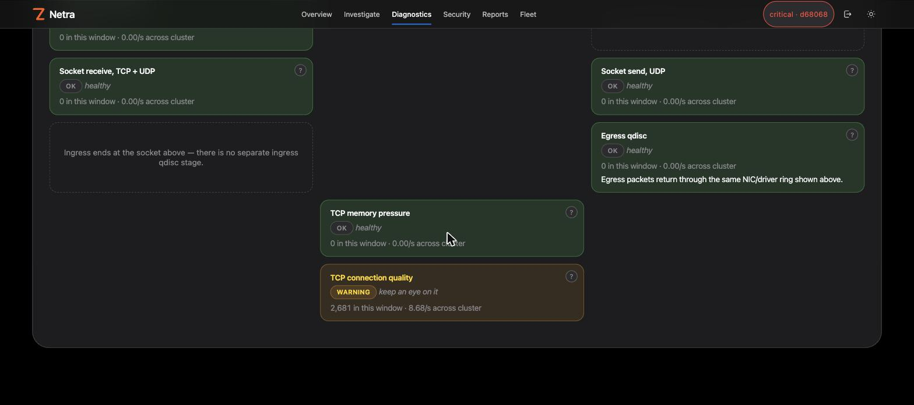
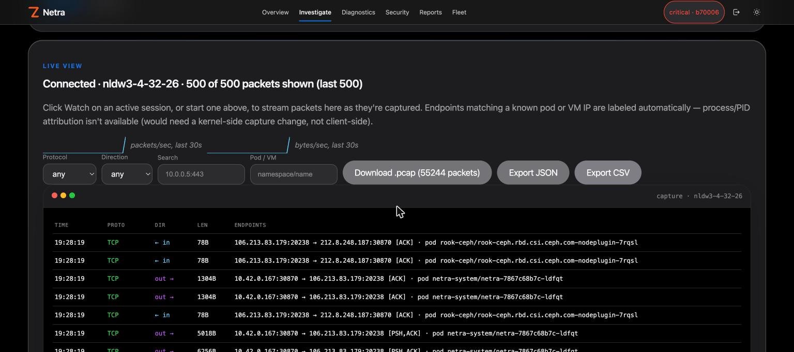

Each sensor is a separate object with its own verifier budget and its own switch. A node that cannot run one loses only that sensor, and says why.
| Object | Hook | What it reads | Default | Needs |
|---|---|---|---|---|
| netra_tc | cgroup_skb in/egress, connect, sendmsg, sockops, drop tracepoint; TCX and XDP optional | flows, policy drops, connection tracking, kernel drop reasons | on, observe mode | cgroup v2 |
| edge_intel | TCX ingress and egress | handshake and RTT histograms, retransmit / RST / FIN counters, before NAT | auto | Linux 6.6+ (TCX) |
| capture | TCX ingress and egress | filtered packet copies into a ring buffer | auto, idle until a session starts | Linux 6.6+ (TCX) |
| tlsfp | cgroup_skb egress | first bytes of a TLS ClientHello, for JA3 / JA4 in user space | auto | cgroup v2 |
| tcpevents | four TCP tracepoints | retransmit, reset and state change, with the flow tuple | auto | tracefs (no BTF) |
| dropinfo | drop tracepoint | tuple, reason and the kernel function that dropped the packet | auto | kernel BTF, tracefs |
| l7sample | cgroup_skb | first 128 bytes on the ports you configure, parsed in the agent | off | cgroup v2 |
| ssl | uprobes on SSL_write / SSL_read | up to 128 bytes of plaintext, allowlisted processes only | off | host PID view, OpenSSL |
Ring buffers need Linux 5.8+. Batched map reads need 5.6+. TCX needs 6.6+. Only drop attribution uses kernel type information (BTF); every other sensor works without it.
Netra owns only /sys/fs/bpf/netra. It does not pin over Cilium's maps, and its capture and edge programs return the kernel's default verdict, so they cannot change a packet's fate.
Tracepoint record layouts and drop-reason names are read from the kernel's own description at load time. Reason numbers change between kernels: NETFILTER_DROP is 8 on Linux 6.8 and 12 on 6.17. A table baked into the agent would mislabel every drop on one of them, so Netra never bakes one in. A layout it cannot read safely is counted and reported, never misread.
| Node | Sensor | Reported |
|---|---|---|
| worker-1 | drop attribution | running |
| worker-2 | drop attribution | kernel BTF not available |
Illustrative. Three modes on every sensor: auto runs it if the node can and reports why if not, off skips it, required stops the agent instead of running without it.
It is 02:10. Pods on worker-3 report timeouts and retries. The CNI dashboard shows healthy policies. Nothing explains it. Here is what Netra does, in order, and what each step gives the operator.
Timings are typical, not guarantees. Steps 3 to 6 are the opt-in auto-capture path (off by default); an operator can start the same capture by hand at any time. Diagram is illustrative.
The sensors that explain a drop are always on where the node supports them, so the evidence exists before anyone asks for it. The controller turns critical signals into an alert, and the dashboard shows where in the stack packets die.
nft_do_chain versus __udp4_lib_rcv is the difference between a firewall rule and a closed port).
When the signal is critical, Netra freezes the context and starts a filtered, time-boxed capture on the affected node. Two backends produce the same frames, so the operator's view and the saved PCAP do not depend on the kernel.

A classic .pcap that opens in Wireshark, and a context.json frozen at the moment of the trigger: node, host and kernel, whether CPU or memory was hot, the top workloads, a short comm-only process list, and the drop, softnet and qdisc counters.
With the PCAP, the context and the drop attribution in hand, the operator knows what is hitting the node. If it must be stopped now, Netra offers a containment that expires on its own.
The deny preview scores a proposed rule (an IP, CIDR, port, DNS name, SNI or process) against the counters Netra has already observed and applies nothing: it shows which flows the rule would have matched. The blast-radius view walks the observed dependency graph outward from a workload (1 to 6 hops, 3 by default) and shows what depends on it. Both read observed traffic only, and say so: they are a guide, not a policy verdict.
Exact IPv4 and IPv6, CIDR (ingress or egress, optional SYN-drop so established connections survive), port, DNS name, TLS SNI, UID, process name, capability-gated socket deny, packet and byte ceilings, and per-workload new-connection caps. Allow-exceptions always win.
In CI, on every change, a real agent on a veth pair shows that: